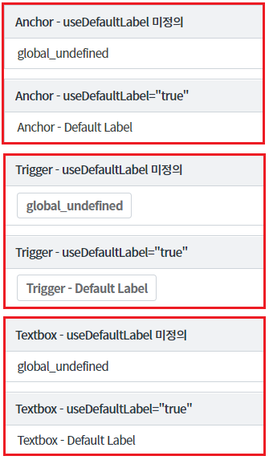
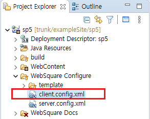
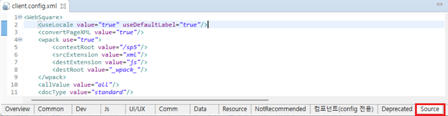
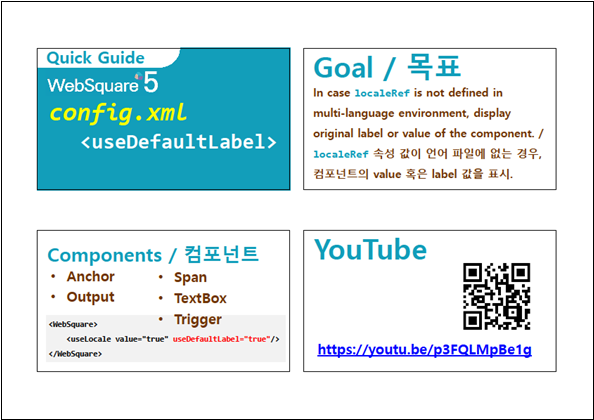

클라이언트 다국어의 공통 설정(client.config.xml)의 속성 중 하나인 useDefaultLabel 속성 사용 예시입니다.
useDefaultLabel 속성은 localeRef 속성에 적용한 다국어 KEY가 정의되지 않은 경우 소스에 하드 코딩된 label 또는 value의 값을 출력해주는 기능을 제공합니다.
useDefaultLabel 기능이 동작하는 대표적인 컴포넌트는 Anchor, TextBox, Trigger 입니다.이 기능은 클라이언트 공통 설정 파일(client.config.xml)에 정의해야 사용할 수 있습니다.
Anchor, TextBox, Trigger 컴포넌트의 localeRef 속성에 등록되지 않은 다국어 KEY를 적용하고, useDefaultLabel 속성을 적용한 것과 적용하지 않은 경우
예제는 각 컴포넌트에 useDefaultLabel 미정의 한 것과 useDefaultLabel="true" 로 설정한 경우로 구성되어있습니다. 각각 브라우저에 출력된 Label을 비교하시기 바랍니다.
useDefaultLabel 속성을 적용하지 않은 경우 : [컴포넌트명] - useDefaultLabel 미정의
useDefaultLabel 속성을 true로 적용한 경우 : [컴포넌트명] - useDefaultLabel="true"
useDefaultLabel 속성이 활성화되지 않은 경우, 정의되지 않은 클라이언트 다국어 KEY를 localeRef에 설정하면 "global_undefined"가 출력됩니다.
그림 1.브라우저(Chrome) 실행 예시

WebSquare5 SP5 스튜디오에서 설정하는 방법입니다.
파일의 위치는 아래와 같습니다.
[sp5]-[WebSquare Configure]-[client.config.xml]
파일을 선택하고 더블 클릭합니다.
아래는 스튜디오의 [Project Explorer] 참고 이미지 입니다.

아래는 스튜디오의 에디터의 [Source]탭 참고 이미지 입니다.

<!-- 설정 예시 --> <WebSquare> <useLocale value="true" useDefaultLabel="true"/> </WebSquare>
localeRef
useLocale
[웹스퀘어5 심화 가이드] 다국어 설정 가이드
링크 : https://docs1.inswave.com/sp5_user_guide/73c59bba42ccbcd4
[웹스퀘어5 심화 가이드] localeRef 속성 값이 언어 파일에 정의되지 않은 경우
링크 : https://docs1.inswave.com/sp5_user_guide/73c59bba42ccbcd4#c8a1d5421634343b
localeRef 속성 값이 언어 파일에 정의되지 않은 경우
링크 : https://youtu.be/p3FQLMpBe1g
